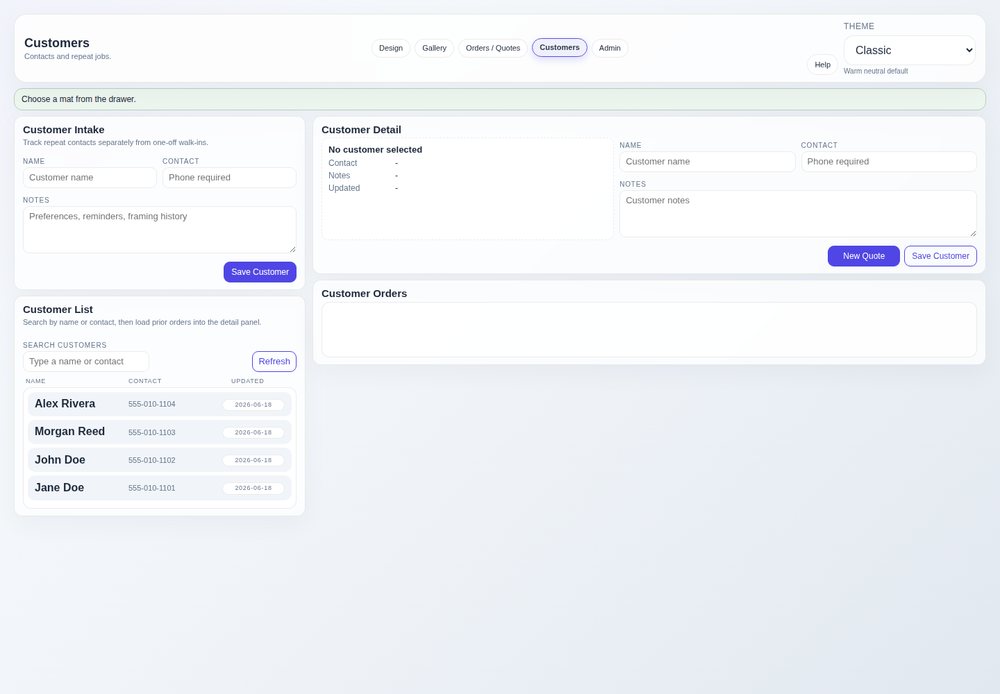

Keep repeat work connected
Customer Management
Customer records keep contact details, notes, and prior jobs together. Saving a quote can create or refresh the matching customer automatically.
Find a customer
- Open Customers. Use the dedicated workspace instead of searching the jobs table when you need the full customer record.
- Search by known details. Search using the customer's name, phone, or saved email.
- Open the record. Review contact information, notes, and prior linked orders.

Create and update records
From a saved quote
When a quote is saved, the app links it to a customer with the same name or creates a new customer record.
From Customers
Create or edit the name, phone, email, and notes directly when contact details need maintenance outside a quote.
Name and phone are operational requirements.
A real customer name and valid phone number are required for quote and work-order provisioning. Generic walk-in placeholders are rejected.
Linked job behavior
- Prior orders appear on the customer detail view.
- Renaming a customer updates linked order customer names.
- Contact edits are reflected in linked jobs so the operator does not have to correct every record separately.
- Customer notes are for local operator context; generated customer messages remain editable in the order inspector.
Good record hygiene
- Search before creating a second record for the same customer.
- Use a phone number the shop can actually reach.
- Keep notes short and useful: material preferences, pickup constraints, or other framing context.
- Review email before opening a draft from Handoff, especially when an older customer record was reused.